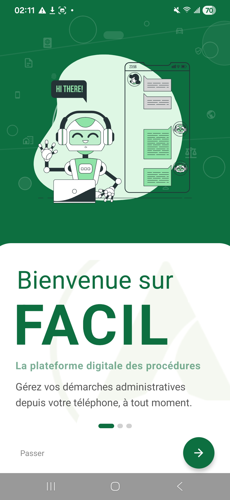
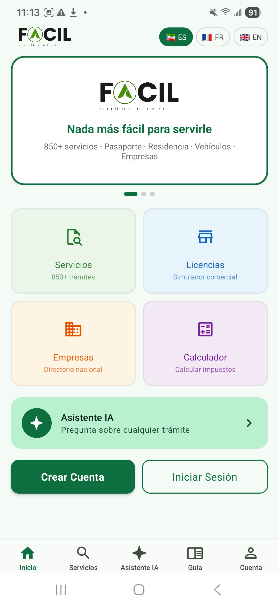
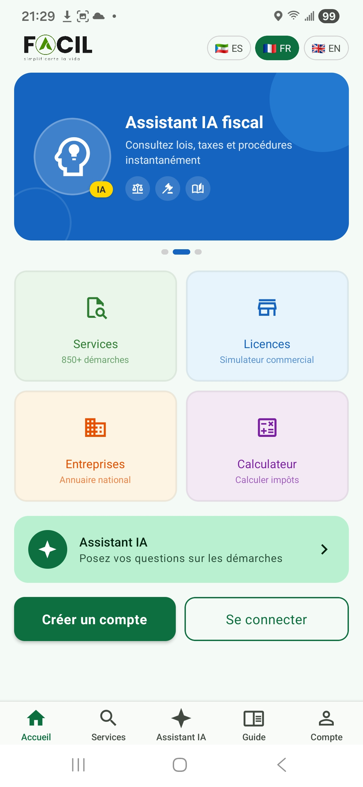

Bienvenida a Facil
La primera pantalla que ve cuando abre Facil — versión Web o aplicación Móvil. Esta página describe cada elemento de la bienvenida, los pasos del onboarding (primera instalación móvil) y las acciones disponibles sin necesidad de iniciar sesión.
1. Onboarding móvil (primera instalación)
La primera vez que abre la aplicación móvil Facil después de instalarla, accede a una pantalla de presentación en 3 diapositivas (onboarding) antes de ver la pantalla de bienvenida estándar. Estas diapositivas explican rápidamente las ventajas de Facil.
Diapositiva 1 — Bienvenida
Ilustración de un robot conversacional, mensaje «Bienvenido a FACIL — La plataforma digital de los procedimientos administrativos». Botones «Saltar» y flecha siguiente» en la parte inferior.

Diapositiva 2 — Inteligente y seguro
Fondo rojo con ilustración de una mujer y un smartphone, mensaje «Inteligente y Seguro — Asistente IA + Seguridad reforzada». Mención de la autenticación 2FA y del cifrado de datos.
Diapositiva 3 — Final con elección
Fondo naranja con ilustración de un cohete, mensaje «Comience ahora — Todo en un solo lugar». 3 enlaces para elegir su próxima acción :
- Explorar sin cuenta — accede directamente a la pantalla de bienvenida estándar (servicios, licencias, calculadora) sin iniciar sesión.
- Crear una cuenta — si es la primera vez en Facil.
- Iniciar sesión — si ya tiene una cuenta.
2. La pantalla de inicio
Cuando abre Facil sin haber iniciado sesión — ya sea desde un navegador en taxasge.emacsah.com o desde la aplicación móvil — accede a la pantalla de bienvenida pública. Esta pantalla está disponible en español, francés e inglés: el selector de idioma está en la cabecera (ES / FR / EN).
La pantalla está estructurada en 4 zonas principales:
- Banner principal (hero) — eslogan «Nada más fácil para servirle», con el logo Facil y el escudo de la República de Guinea Ecuatorial.
- 4 tarjetas de acción — accesos rápidos a Servicios, Licencias, Empresas y Calculadora. Cada tarjeta lleva directamente a su sección.
- Cabecera con menú — selector de idioma, accesos rápidos (Servicios, Licencias, Directorio, Ministerios, Calculadora, Guía, Asistente IA).
- Botones de cuenta — «Crear cuenta» (rojo) e «Iniciar sesión» (azul) en la parte inferior, claramente visibles.

3. El carrusel de novedades
La pantalla de bienvenida incluye un carrusel de varias diapositivas que destaca las funcionalidades clave de Facil. Las diapositivas pasan automáticamente cada 5 segundos, o usted puede pasar manualmente con un deslizamiento.
Diapositiva 1 — Bienvenida general
Presentación principal con eslogan «Nada más fácil para servirle» y las 4 tarjetas de acción.
Diapositiva 2 — Asistente IA
Banner azul que destaca el Asistente IA fiscal: «Pregunte a nuestro asistente IA sobre los trámites en Guinea Ecuatorial — disponible 24/7». Las 4 tarjetas de acción siguen visibles debajo.

4. Las 4 acciones principales
Desde la pantalla de bienvenida, 4 tarjetas le dan acceso directo a las funciones más utilizadas — sin necesidad de iniciar sesión:
| Tarjeta | Para qué sirve | Página manual |
|---|---|---|
| Servicios | Catálogo completo de los 873 servicios fiscales y administrativos disponibles, agrupados por entidad. | Explorar servicios |
| Licencias | Simulador de tarifas para licencias comerciales (3 etapas: tipo de comercio, zona, resultado). | Simulador de licencias |
| Empresas | Directorio público de empresas registradas con su clasificación tier (A1, B2, C1, D1...). | Directorio de empresas |
| Calculadora | Calculadora fiscal con 4 pestañas: IRPF (impuesto sobre la renta), IVA (impuesto sobre el valor añadido), IS (impuesto de sociedades), Servicios fiscales. | Calculadora fiscal |
5. Explorar sin cuenta o iniciar sesión
Desde la pantalla de bienvenida, tiene 3 opciones:
| Opción | Cuándo elegirla | Limitaciones |
|---|---|---|
| Explorar sin cuenta | Quiere consultar los servicios, simular una tarifa, usar la calculadora o verificar un recibo — sin compromiso. | No puede iniciar trámites, no puede subir documentos, no recibe notificaciones. |
| Crear una cuenta | Es la primera vez que utiliza Facil y quiere realizar un trámite real. | Necesita una dirección de correo electrónico válida y un teléfono móvil para verificación. |
| Iniciar sesión | Ya tiene una cuenta Facil. | Si olvidó su contraseña, use el enlace «¿Contraseña olvidada?» en la pantalla de inicio de sesión. |
Las páginas dedicadas: Crear cuenta, Iniciar sesión.
6. Diferencias Web vs Móvil en la bienvenida
Las dos versiones ofrecen acceso al mismo contenido pero presentan algunas diferencias en la pantalla de bienvenida:
| Elemento | Web (navegador) | Aplicación Móvil |
|---|---|---|
| Pantalla de bienvenida con carrusel | ✅ | ✅ |
| 4 tarjetas de acción | ✅ | ✅ |
| Selector ES / FR / EN | ✅ | ✅ |
| Onboarding 3 diapositivas (primera vez) | ❌ | ✅ (solo primera apertura) |
| Notificaciones push | ❌ | ✅ (después del inicio de sesión) |
| Identificación biométrica | ❌ | ✅ (después del inicio de sesión) |
| Modo sin conexión | ❌ | ✅ (caché de las últimas páginas vistas) |